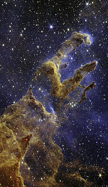

La astronomía (del griego άστρον [ástron] 'estrella' y νομία [nomía] 'normas', 'leyes de las estrellas')1 es la ciencia natural que estudia los cuerpos celestes del universo, incluidos las estrellas, los planetas, sus satélites naturales, los asteroides, cometas y meteoroides, la materia interestelar, las nebulosas, la materia oscura, las galaxias y demás; por lo que también estudia los fenómenos astronómicos ligados a ellos, como las supernovas, los cuásares, los púlsares, la radiación cósmica de fondo, los agujeros negros, entre otros, así como las leyes naturales que las rigen. La astronomía, asimismo, abarca el estudio del origen, desarrollo y destino final del universo en su conjunto mediante la cosmología, y se relaciona con la física a través de la astrofísica, la química con la astroquímica y la biología con la astrobiología. Su registro y la investigación de su origen viene a partir de la información que llega de ellos a través de la radiación electromagnética o de cualquier otro medio. La mayoría de la información usada por los astrónomos es recogida por la detección remota, aunque se ha conseguido reproducir, en algunos casos, en laboratorios, la ejecución de fenómenos celestes, como, por ejemplo, la química molecular del medio interestelar. Es una de las pocas ciencias en las que los aficionados aún pueden desempeñar un papel activo, especialmente sobre el descubrimiento y seguimiento de fenómenos como curvas de luz de estrellas variables, descubrimiento de asteroides y cometas, etc... |
 |
La astronomía ha estado ligada al ser humano desde la antigüedad y todas las civilizaciones han tenido contacto con esta ciencia. Personajes como Aristóteles, Tales de Mileto, Anaxágoras, Aristarco de Samos, Hiparco de Nicea, Claudio Ptolomeo, Hipatia de Alejandría, Nicolás Copérnico, Tycho Brahe, Johannes Kepler, Galileo Galilei, Christiaan Huygens o Edmund Halley han sido algunos de sus cultivadores. La metodología científica de este campo empezó a desarrollarse a mediados del siglo xvii. Un factor clave fue la introducción del telescopio por Galileo Galilei, que permitió examinar el cielo de la noche más detalladamente. El tratamiento matemático de la Astronomía comenzó con el desarrollo de la mecánica celeste y con las leyes de gravitación por Isaac Newton, aunque ya había sido puesto en marcha por el trabajo anterior de astrónomos como Johannes Kepler. Hacia el siglo xix, la astronomía se había desarrollado como una ciencia formal, con la introducción de instrumentos tales como el espectroscopio y la fotografía, que permitieron la continua mejora de telescopios y la creación de observatorios profesionales.2
Etimología
La palabra astronomía proviene del latín astrŏnŏmĭa /astronomía/ y esta del griego ἀστρονομία /astronomía/.3 Está compuesta por las palabras άστρον /ástron/ 'estrellas', que a su vez viene de ἀστῆρ /astḗr/ 'estrella', 'constelación', y νόμος /nómos/ 'regla', 'norma', 'orden'.3
El lexema ἀστῆρ /astḗr/ está vinculado con las raíces protoindoeuropeas *ster~/*~stel (sust.) 'estrella' presente en la palabra castiza «estrella» que llega desde la latina «stella». También puede vérsele en: astrología, asteroide, asterisco, desastre, desastroso y muchas otras.4
El lexema ~νομία /nomíā/ 'regulación', 'legislación'; viene de νέμω /némoo/ 'contar', 'asignar', 'tomar', 'distribuir', 'repartir según las normas' y está vinculado a la raíz indoeuropea *nem~ 'contar', 'asignar', 'tomar', distribuir'; más el lexema ~ία /~íā/ 'acción', 'cualidad'. Puede vérsela en: dasonomía, macrotaxonomía, tafonomía y taxonomía.5
Etimológicamente hablando la astronomía es la ciencia que trata de la magnitud, medida y movimiento de los cuerpos celestes.6
Historia
Esta sección es un extracto de Historia de la astronomía.
Ilustración de la teoría geocéntrica.
Esfera armilar.
La historia de la astronomía es el relato de las observaciones, descubrimientos y conocimientos adquiridos a lo largo de la historia en materia astronómica.
La astronomía surge desde que la humanidad dejó de ser nómada y se empezó a convertir en sedentaria; luego de formar civilizaciones o comunidades empezó su interés por los astros. Desde tiempos inmemorables se ha visto interesado en los mismos. Estos han enseñado ciclos constantes e inmutabilidad durante el corto periodo de la vida del ser humano, lo que fue una herramienta útil para determinar los periodos de abundancia para la caza y la recolección o de aquellos como el invierno en que se requería de una preparación para sobrevivir a los cambios climáticos adversos. La práctica de estas observaciones es tan cierta y universal que se han encontrado a lo largo y ancho del planeta en todas aquellas partes en donde ha habitado el ser humano. Se deduce entonces que la astronomía es probablemente uno de los oficios más antiguos, manifestándose en todas las culturas humanas.
te puede interesar